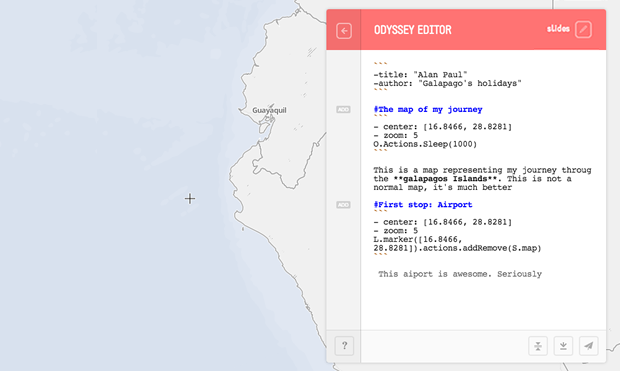

1. Pick a template
Templates allow you to change the basic way your story will unfold. Designs include scrolling, slide based, and temporal based templates. You can also contribute your own.
2. Craft your story
The Odyssey Sandbox gives you an easy way to test the Odyssey library and mix written narrative, multimedia, and map based interaction into a beautiful map driven story.

-
Record actions
Use the map to link pan and zoom actions to each stage of your story.
-
The map
Preview exactly what your reader will see as they move through your story.
-
Story options
Explore existing actions and behaviors directly in the sandbox.
-
Markdown editor
Use Markdown to format and arrange your story content.